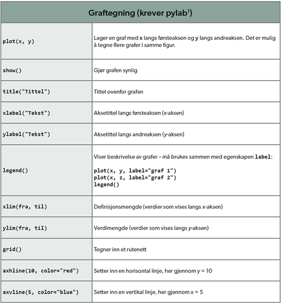

Plotting og Grafikk: visualisering av funksjoner og data
Graftegning
Visualisering av funksjoner og data er en viktig del av matematiske og naturvitenskapelige fag. Herfor blir funksjoner fra importerte
biblioteker brukt, for eksempel pylab. Først: importer pylab biblioteket. Deretter blir første linje i programmet: "from pylab import * ".
Mer info om dette finner du i en lite video (i engelsk).
I figur nedenfor blir forskjellige kommandoer presentert. Kommandoene er viktig i å definere din graf.

Mer avansert graftegning trenger mer avanserte biblioteker. Matplotlib.pyplot er veldig ofte brukt og har flere muligheter.
Etter importering av matplotlib blir første setning i kode "from matplotlib.pyplot as plt". Samme kommandoer som i figur ovenfor
blir brukt her, legg merke til at kommandoer begunner med " plt. ".
Eksempel: plot(x, y) (pylab) blir plt.plot(x, y) (matplotlib).
Matplotlib inneholder mye matematiske funksjoner, også. Ennå flere matematiske funksjoner er tilgjengelig i numpy bibliioteket. Mer info:
Tilbake til kurs for lærere